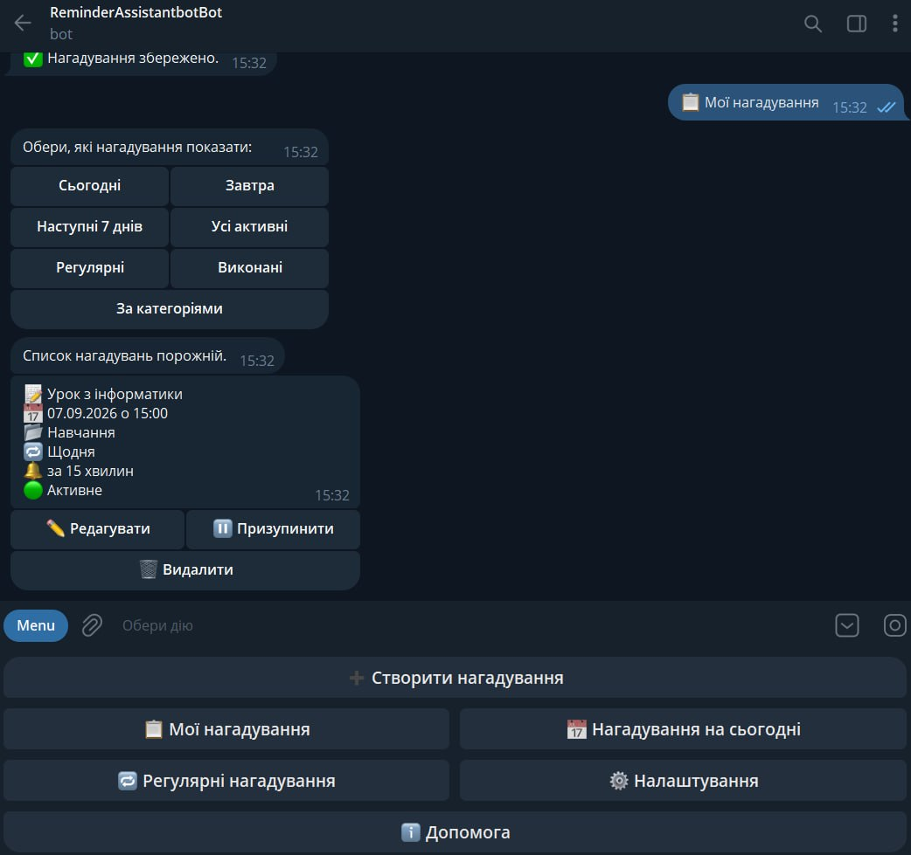
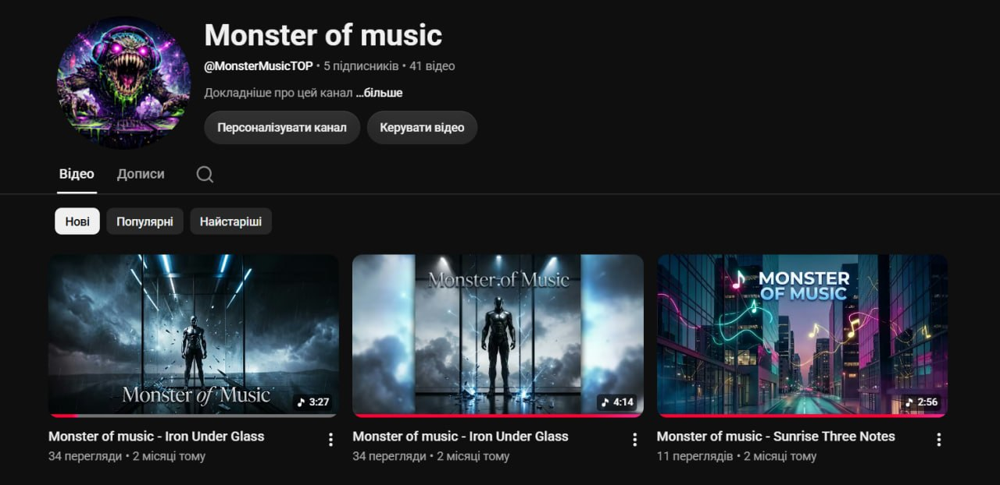

Telegram-бот
Простий бот для нагадувань, команд, повідомлень або іншого нескладного сценарію.
Digital portfolio
Я учень, який розвивається в ІТ: цікавлюся Python, аналізом даних, створенням Telegram-ботів, навчанням моделей YOLO розпізнавати об’єкти та роботою з Word, Excel і PowerPoint.
Про мене
Я навчаюся в 11 класі та цікавлюся IT-індустрією, дата-аналітикою, робототехнікою і сучасними технологіями. Мені подобається розбиратися, як працюють програми та пристрої, і застосовувати знання у власних навчальних проєктах.
Зараз я поглиблюю знання Python, створення Telegram-ботів, аналізу даних та комп’ютерного зору. Дуже хочу в майбутньому працювати у цій сфері й поступово здобувати практичний досвід.
Послуги
Беруся за зрозумілі, невеликі проєкти та заздалегідь обговорюю їхній обсяг.
Простий бот для нагадувань, команд, повідомлень або іншого нескладного сценарію.
Допоможу підготувати дані й навчити базову модель YOLO розпізнавати потрібні об’єкти.
Обробка даних із таблиць, нескладна автоматизація та наочні графіки для демонстрації клієнту.
Невеликі односторінкові сайти або сторінки-портфоліо на HTML, CSS і JavaScript.
Projects
Тут зібрані навчальні та практичні роботи. Нову картку легко додати,
скопіювавши один блок project-card нижче.

Telegram bot
Бот для створення нагадувань, щоб не забувати про важливі справи та події.
Computer vision
Навчив модель YOLO розпізнавати солодощі за п’ятьма класами та перевірив результат на відео.
Python
Легка навчальна гра на Python із графічним інтерфейсом, створеним за допомогою бібліотеки Tkinter.

Автоматизація
Автоматизація через API: бере з Excel пісні на потрібну дату, генерує зображення, поєднує аудіо й фото у відео та публікує його на YouTube.
Робототехніка
Навчальна робота з Arduino, яка допомогла краще зрозуміти роботу мікроконтролерів, датчиків і підключення компонентів.
Наступний проєкт
Далі буде
Це місце для нового навчального або практичного проєкту. Додайте фото, короткий опис, технології та посилання на GitHub, коли все буде готово.
Підхід
Спочатку уточнюю мету, потім роблю зрозумілий варіант рішення та перевіряю результат.
Дізнаюся, який результат потрібен, які є матеріали та що має бути в готовому проєкті.
Підбираю простий і зрозумілий спосіб зробити сайт, бота, модель або автоматизацію.
Тестую основний сценарій, виправляю помітні помилки та пояснюю, як користуватися результатом.
Контакти
Напишіть коротко про запит. Повідомлення з форми надсилається в Telegram, тож я побачу його в групі.